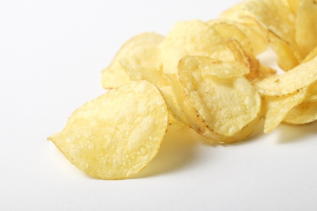

感性とは
2. 感性とは
感性の歴史
-
知覚を意味する古代ギリシャ語のアイステーシスが語源と言われている
（三浦, 2010）。 -
ドイツの哲学者バウムガルテンは感性的認識についての学問を美学として位置づけ、カントに影響を与えた（椎塚, 2013）。
2. 感性とは
感性の歴史
-
カントは、心には学習や経験によらない先天的なカテゴリーがあるとし、その考えから感性と悟性の概念を生みだした（佐藤, 2011）。
-
日本語の「感性」は、西周がsensibilityを訳す際に、江戸時代に「感情」の意味で用いられていた「感性」をあてたとされる（坂本, 1996）。
-
カント哲学の研究者であった天野貞祐がドイツ語のsinnlichkeitに対して「感性」をあてたという説もある（佐藤, 2011）。
2. 感性とは
感性の定義

-
1. 人の持つ感情やイメージ、感受性（都甲, 2004）
-
2. 瞬間的あるいは直感的に物事を判断する能力（久野, 2007）
-
3. 印象評価を伴う知覚（三浦, 2009）
2. 感性とは
感性とは何か？

-
情動や印象、イメージ等を生じさせる
心のはたらき（知覚） -
感性によって知覚された情動や印象、イメージ等は
感性情報と呼ばれる
2. 感性とは
感性研究の例：物事の印象を構成する因子
-
物事に対する印象は、美しい、柔らかい、冷たい、激しい、鋭いなど多様な形容詞で表現される。
-
多様な形容詞で表される印象は、刺激や文化の違いにかかわらず、評価性、活動性、力量性因子の３つが安定して抽出されるケースが多い（行場, 2007）。
2. 感性とは
感性研究の例：オノマトペ

-
オノマトペは①非冗長性、②否定文との相性の悪さの点で普通の言葉と明らかに異なり、より直接的で原体験に近い情報を伝えようとしている（喜多、2002）。
太郎はスタスタと早歩きをした。
あの石はコロコロと転がった。太郎は急ぎ足で早歩きをした。
あの石はコロコロと転がらなかった。
2. 感性とは
感性研究の例：香りの感性

2. 感性とは
感性研究の例：食感の感性

-
ポテトチップスを食べる時の音をマイクで集音し、 音量をあげてヘッドホンから再生すると、 知覚されるパリパリ感が上昇（Zampini et al, 2004）。
-
ポテトチップスの咀嚼音を約0.1秒遅らせてヘッドホンから再生すると、 ポテトチップスのザクザク感が上昇（中島, 2016）。
参考文献
- 喜多壮太郎. "ジェスチャー―考えるからだ (身体とシステム) ", 金子書房, 2002.
- 行場次郎 他. "知覚心理学ハンドブック", 誠信書房, pp.108-124, 2007.
- 坂本博 他. "感性工学への招待−感性から暮らしを考える−", 森北出版, 1996.
- 佐藤方彦. "感性を科学する", 丸善, 2011.
- Zampini, et al. "The role of auditory cues in modulating the perceived crispness and staleness of potato chips." Journal of sensory studies 19.5, pp.347-363, 2004.
- 椎塚久雄 他. "感性工学ハンドブック−感性をきわめる七つ道具−", 朝倉書店, 2013.
- 都甲潔. "感性の起源", 中央公論新社, 2004.
- 中島武三志 他. "ポテトチップスを利用した咀嚼音遅延フィードバックによる食感拡張の検討（特集 ウェアラブル時代の身体性とVR）", 日本バーチャルリアリティ学会論文誌 Vol.21 No.4, pp.585-594, 2016.
- 久野節二. "シンポジウム「感性工学の現在，そして未来」", 感性工学, 7 (2), pp.222-226, 2007.
- 三浦佳世. "アイステーシスの科学としての感性研究", 感性工学, 8 (2), pp.232-239, 2009.
- 三浦佳世 他. "現代の認知心理学１ 知覚と感性", 北大路書房, 2010.
- Morrot, et al. "The color of odors", Brain & Langage, 79, pp.309-320, 2001.